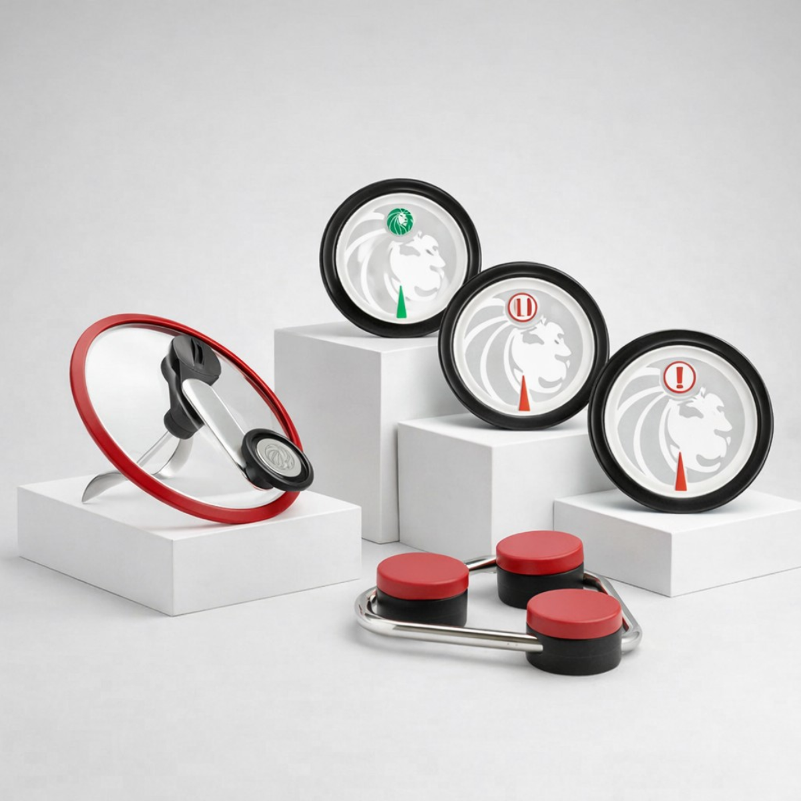
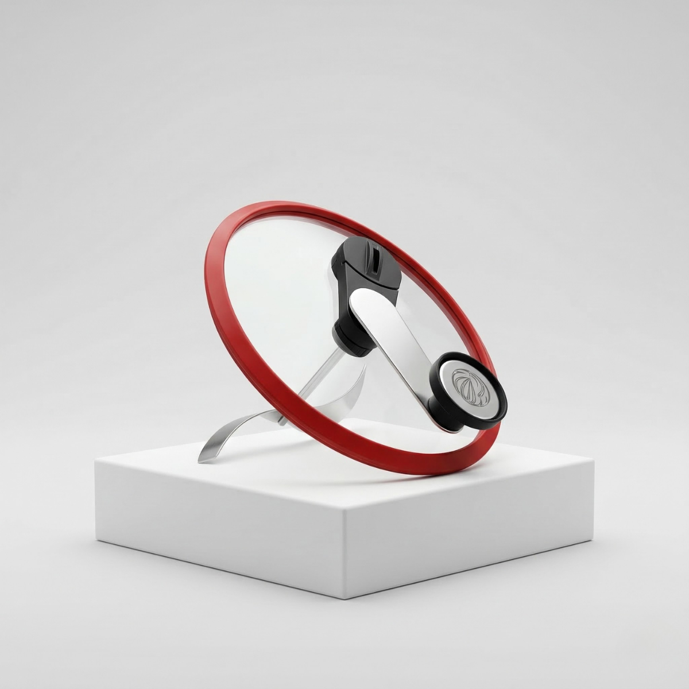
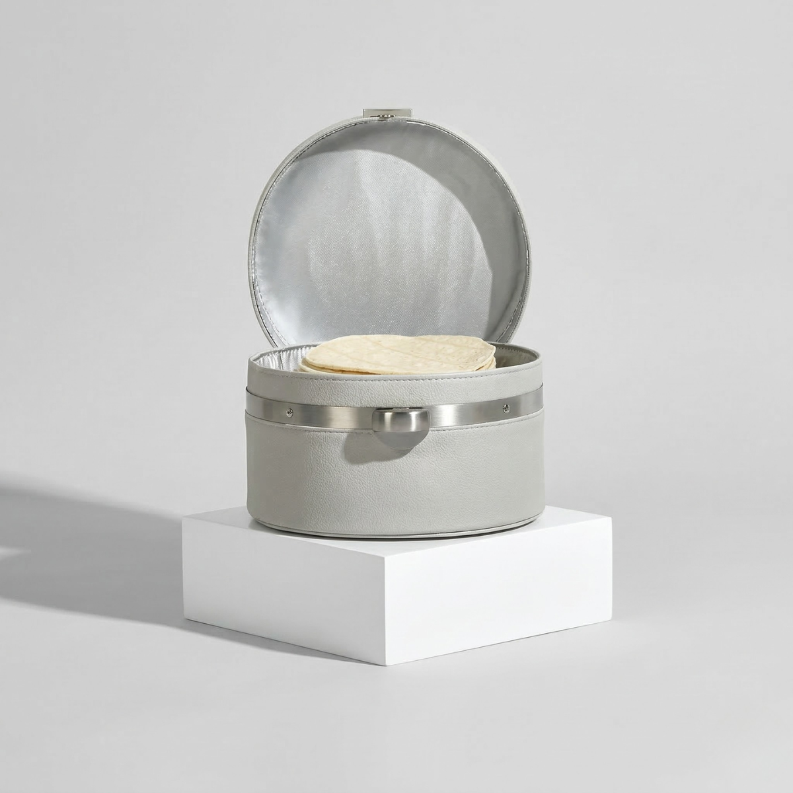
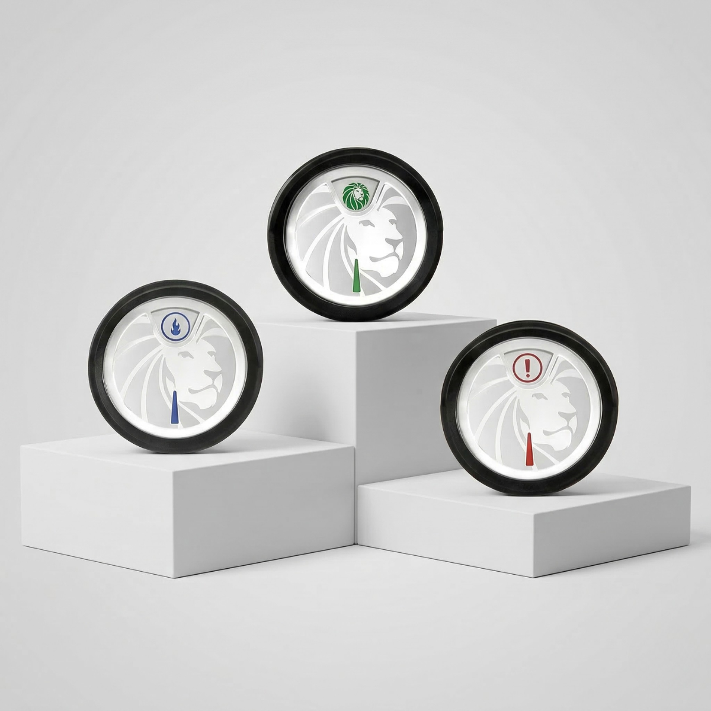
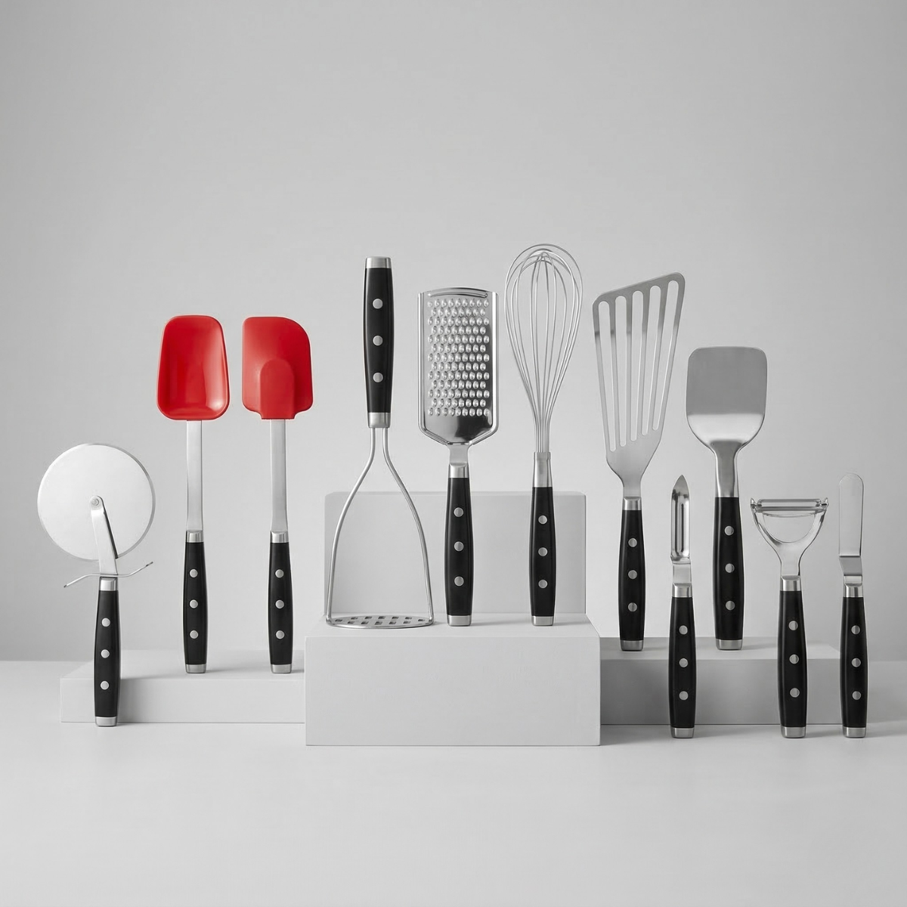
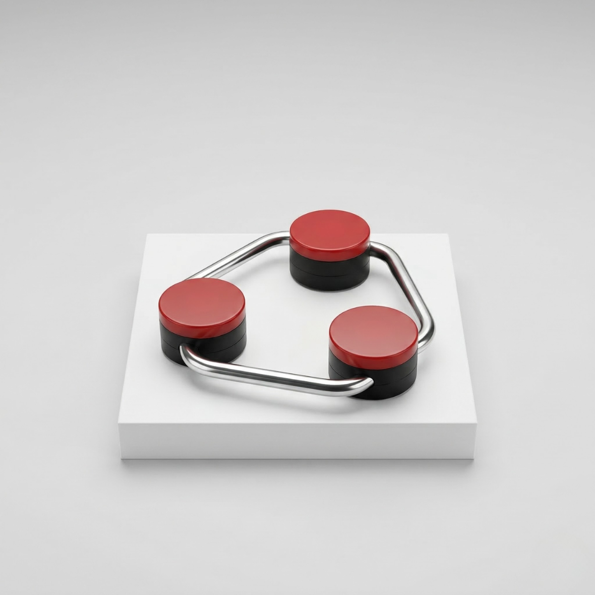
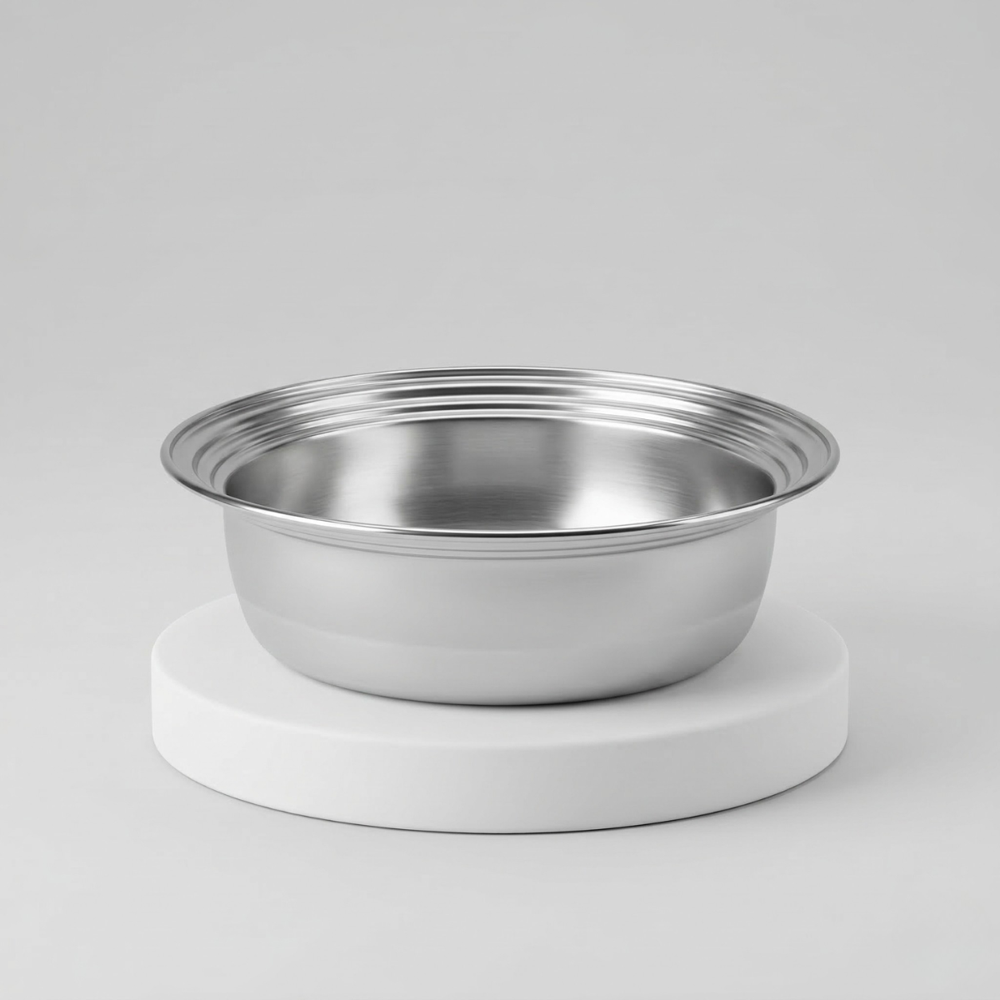
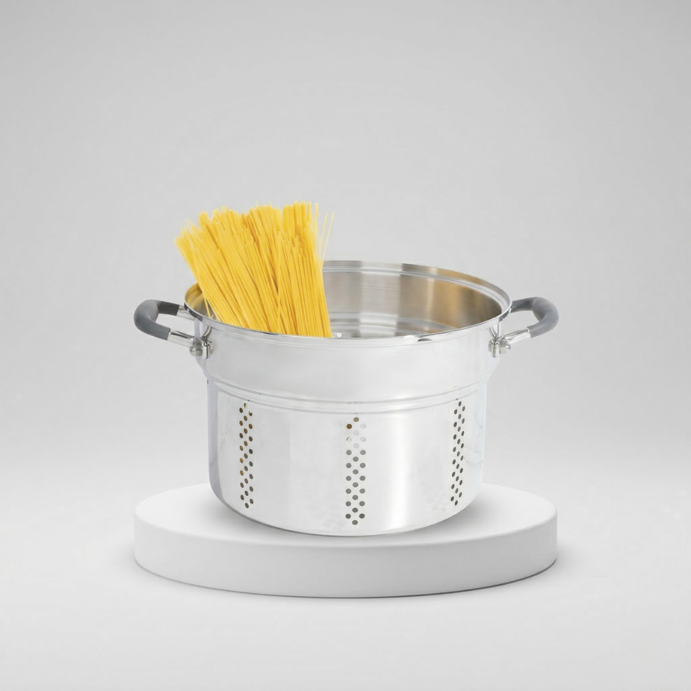
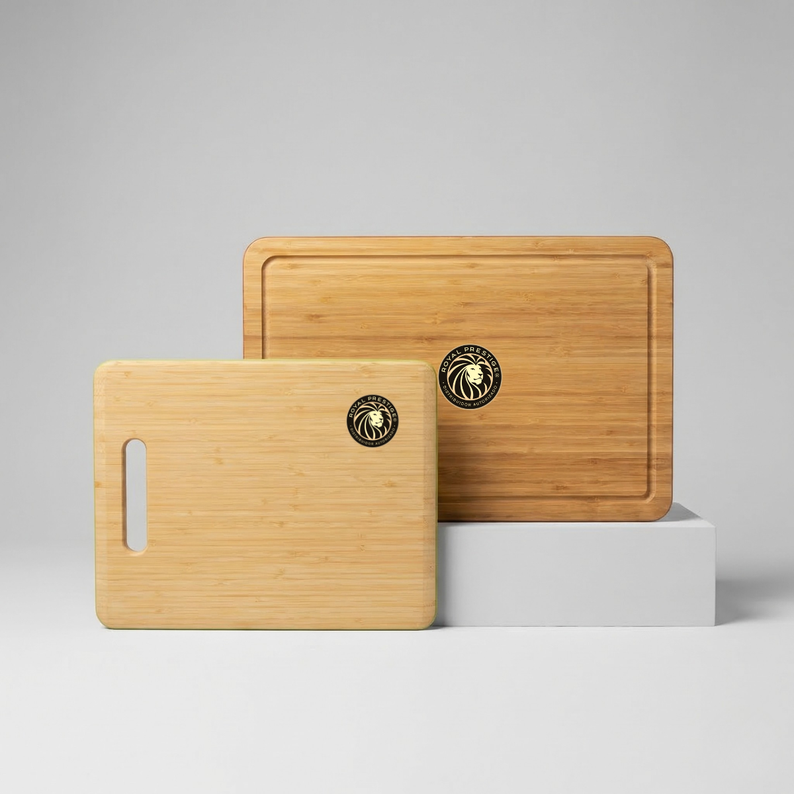
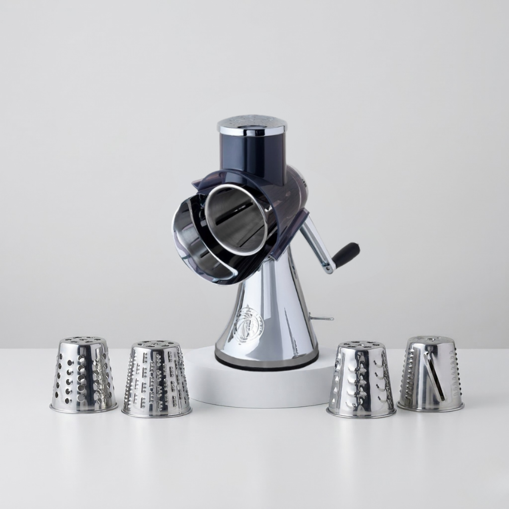

Una selección de accesorios, utensilios y complementos Royal Prestige® para cocinar, servir, conservar temperatura, preparar palomitas, cortar ingredientes y hacer más práctica tu experiencia en la cocina.
Esta página reúne Perfect Pop, Warmer Pro, Smart Temp, Accesorios de Cocina Precision Series™, Base Magnética para Ollas, Tazón para Baño María, Colador de Pasta de 8 Cuartos, Tablas de Bambú para Cortar y Máquina de Ensaladas Royal Prestige®.
Misceláneo integra productos de apoyo para distintas tareas de cocina y mesa: mantener alimentos calientes, medir temperatura, preparar palomitas, cortar ensaladas, usar accesorios especializados y complementar tus utensilios cotidianos.
La selección combina piezas de uso diario con productos más específicos, para ofrecer una categoría amplia y funcional dentro de la línea de accesorios Royal Prestige®.
Esta página hija concentra toda la sección miscelánea en un solo lugar para facilitar su revisión y presentación comercial.

¡Lleva el cine a tu casa con las palomitas de maíz perfectas!
Comparte con tu familia un popcorn recién hecho y crujiente, mejor que en el cine. Prepara tus palomitas de maíz de forma clásica y sazónalas a tu gusto.
Agrega tus condimentos en la apertura pequeña sin tener que destapar la olla. La tapa de cristal te permite monitorear cómodamente la cocción de tu popcorn.
Esta tapa especial está diseñada para ensamblar a la perfección con tu Olla Royal Prestige® de 6 cuartos.

¡Mantén la temperatura y sabor de tus tortillas para unir a los que más amas!
Este utensilio mantiene la temperatura de tus alimentos gracias a su tecnología y su batería externa, o si lo prefieres, con su cable de carga.
Su diseño compacto permite llevarlo a reuniones y festividades. Además de ser ideal para tortillas, también es compatible con arepas, hotcakes, croissants, mini-muffins, pão de queijo y más.
Su cerrojo mantiene el calor de manera uniforme y la rejilla antihumedad ayuda a conservar mejor la textura de los alimentos.

Detén las suposiciones y obtén la temperatura óptima para una preparación ideal.
Diseñado para ayudarte a cocinar con más precisión, este termómetro es compatible con los sartenes de acero inoxidable Royal Prestige®.
Su diseño incluye un asa de silicón que permite retirarlo de la superficie de cocción con mayor comodidad y menor riesgo de quemaduras.
Es una herramienta pensada para quienes desean mayor control en la cocción y una referencia visual más clara al cocinar.

Herramientas de calidad superior para una cocina eficiente.
Accesorios indispensables, de alta resistencia y fabricados en materiales de la más alta calidad para cocinar, batir, pelar, cortar, destapar, mezclar, untar y servir.
Son accesorios pensados para facilitar múltiples tareas en la cocina diaria, con una presentación sobria y funcional.

El soporte ideal para servir tus comidas.
Altamente resistente y antideslizante. Se adhiere a la base de tus ollas y sartenes Royal Prestige® para servir comidas calientes y proteger las superficies de tu cocina.
Su forma triangular ofrece soporte ideal para ollas y sartenes con diámetro aproximado de 3 a 10 pulgadas.

Derrite el corazón de tus comensales.
Con este práctico utensilio puedes derretir a la perfección mantequilla, chocolate, azúcar y otros ingredientes, así como cocinar postres en baño maría.
Úsalo en tus Ollas Royal Prestige® de 3 y 4 cuartos.
Diámetro: 7.5" / 19 cm
Capacidad: 2 qt / 1.89 L

Tu asistente indispensable para lograr una deliciosa pasta.
Ideal para pasta, caldos, sopas o guisados. Hecho de acero inoxidable grado quirúrgico, es el complemento perfecto para cocinar infinidad de recetas.
Su diseño facilita escurrir y manipular preparaciones con mayor practicidad dentro de la cocina diaria.

Las esenciales en tu cocina.
El bambú es un material renovable y muy resistente que ayuda a amortiguar el impacto de los cuchillos contra la superficie, permitiendo conservarlos en excelente estado por más tiempo.
Úsalas para cortar, como tabla de charcutería o incluso para lucir tus mejores platillos.
Tabla Grande: 18" x 12" / 45.7 cm x 30.4 cm
Tabla Mediana: 14" x 11" / 35.5 cm x 27.9 cm

Logra cortes gourmet para preparar tu ensalada favorita.
Obtén cortes variados de una gran diversidad de ingredientes, incluyendo verduras, frutas, galletas, quesos y salchichas, de manera rápida, eficiente y precisa.
La base de goma y la palanca de sujeción evitan deslizamientos y ofrecen firmeza al cortar. Cuenta con 5 conos de acero inoxidable grado quirúrgico intercambiables.
Revisa el catálogo general de Nobel o abre los catálogos específicos de los productos que cuentan con presentación individual.
Escríbenos y te ayudamos a identificar cuáles de estos accesorios y complementos pueden adaptarse mejor a tu cocina, tu mesa y tu estilo de uso.